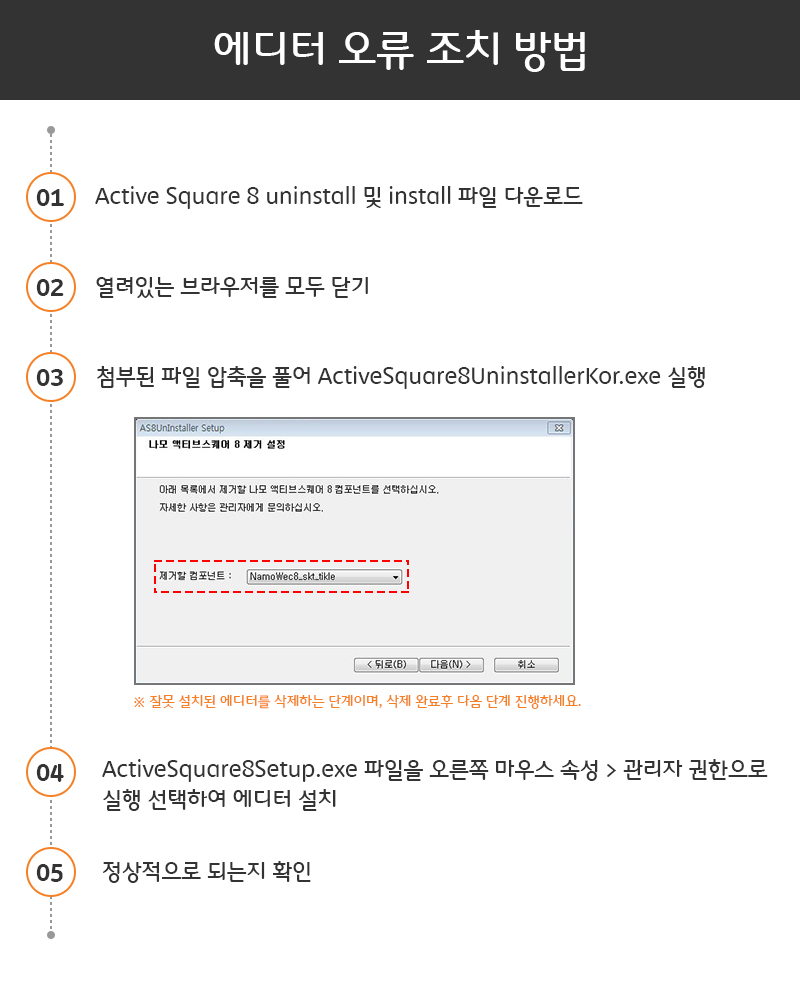

<!DOCTYPE html>
<html xmlns="http://www.w3.org/1999/xhtml">
    <head>
    <meta http-equiv="Content-Type" content="text/html; charset=utf-8"/>
        <title>Namo Active Squere 8 재설치</title>
        <script type="text/javascript">
            function editordownload() {
                location.href = "../Common/download/Namo%20ActiveX%20uninstall%20or%20install.zip";
            }
        </script>
    </head>
    <body onload="editordownload()" style="margin : 0;">
        <!--Namo Editor 설치 시 문제가 발생하면 아래의 방법으로 해결이 가능합니다.<br/>
        <br />
        1. 제거<br/>
        <a href="../Common/download/ActiveSquare8UninstallerKor.exe">1. ActiveSquare8UninstallerKor.exe</a><br/>
        2. 재설치</br>
        <a href="../Common/download/ActiveSquare8Setup.exe">2. ActiveSquare8Setup.exe</a>-->
        <!---->
        
        <!--<a href="javascript:editordownload();" style="position: absolute; top: 178px; left: 95px; width: 500px; height: 50px; border: 1px solid red;">
            <div style="">

            </div>
        </a>-->
        
        <map name="down">
            <area shape="rect" coords="87,142,600,220" href="javascript:editordownload();">
        </map>
    </body>
</html>
